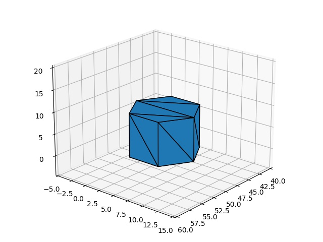
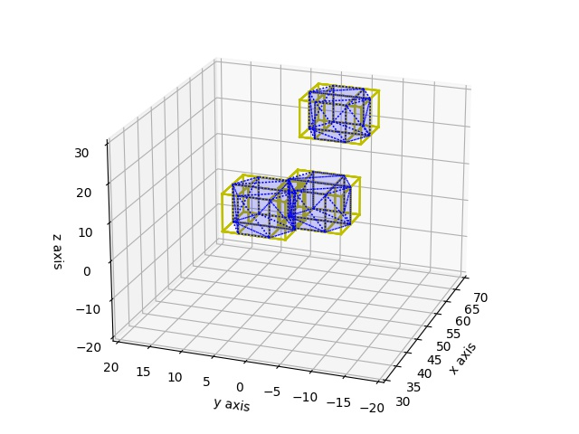
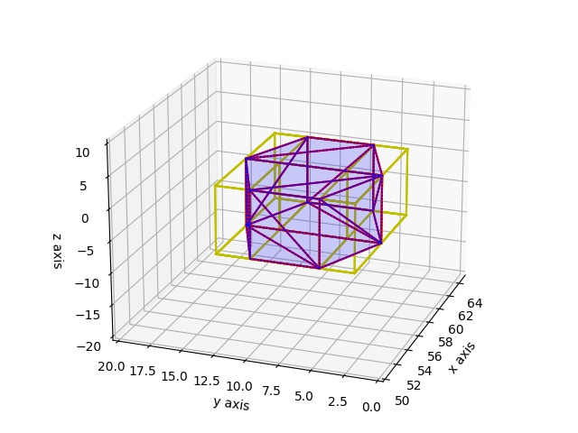

AABB, Üçgen Kesişmesi, Hızlı Çarpışma Saptaması
Fiziksel dünyada hesaplanan bir simülasyon düşünelim, objeler var, hareket ediyorlar, bu objelerin çarpışıp çarpışmadığını her animasyon karesi (frame) içinde saptamamız gerekir, ki bu durumun bir sonraki karede fiziksel sonucunu gösterelim. Çarpışan bilardo topları çarpışma sonucu yer değiştirmelidir. Bir taşıt bir duvara çarpımışsa durmalıdır, gibi.
İki obje arasında detaylı çarpışma hesabını yapabilen yaklaşımlar mevcut, [1]'de bunlardan birini gördük, fakat bu hesaplar her ikili kombinasyonuna teker teker bakmayı gerektirir, eğer irili ufaklı 1000 obje simüle ediliyorsa bu 1000 x 1000 bir milyon işlem demektir! Çarpışmaları daha hızlı ve en detaylı şekilde acaba nasıl hesaplarız? Burada ele alacağımız çözüm birkaç aşamadan oluşuyor olacak.
İlk aşama obje çiftlerinin birbirinden çarpışamayacak kadar uzak olanları saptayarak, ya da bu objelere hiç bakmayarak, bir sonraki fazdaki detaylı hesap yükünü azaltmak. Çarpışma saptama literatüründen bu aşamaya genel faz (broad phase) ismi veriliyor.
Birbiri ile çarpışması muhtemel olan objeler bulunduktan sonra, çarpışması muhtemel iki objenin yüzey parçalarının da birbirine uzak olanlarını elemek.
İki aday obje arasındaki aday yüzey parçalarını bulduktan sonra, artık detaylı kesişim testlerini yapabiliriz, bu testler / hesaplar nihai kesişim noktasını bulacaktır. Bu son iki kalem literatürde daraltılmış faz (narrow phase) olarak anılıyor.
Bu kalemlerden ilki için AABB Ağacı yaklaşımını [2] yazısında gördük.
O yazıda verilen AABB.py kodunu kullanarak etrafında birer
"eksenlere hizalı sınırlayıcı kutu (axis aligned bounding box -AABB-)"
tanımlanan objeler arasında kabaca çakışma olup olmayacağını anlamak
mümkündür. AABB Ağaç yapısı içindeki AABB kutularını hızlı bir şekilde
indisleyip birbirine uzak olan objelere bakmamak için optimize
edilmiştir.
İkinci kalem için ilginç bir yaklaşım şudur, aslında AABB Ağaç tekniğini iki aday obje arasındaki "kesişme adayı yüzey parçaları" (çoğunlukla bu parçalar 3D üçgendir) için de kullanabiliriz. Çünkü aynen objeler etrafında AABB kutuları tanımlanabildiği gibi üç boyutlu yüzey parçaları etrafında da AABB kutuları tanımlanabilir, ve mesela bir objenin tüm yüzey parçaları bir ağaç oluşturur, ve bu ağaca artık çarpışma adayı diğer objenin tüm yüzey parçalarını teker teker alıp "çarpışma var mı?" diye sorabiliriz. Bu işlem de, aynen objeler arasında olduğu gibi, birbirinden uzak olan parçalara bakmayarak sadece aday parçalara bakarak sonuca ulaşmayı hızlandıracaktır.
Üçüncü kalemde artık uzak objeler elenmiştir, bakılan iki obje arasında onların uzak yüzey parçaları elenmiştir, ve geri kalan parçalar arasında nihai kesişme hesabı zamanı gelmiştir. Bu aşamada yüzey parçaları üçgen ise, [1]'de görülen çizgi/üçgen kesişme hesabı kullanılabilir, her üçgenin her kenarını bir çizgi parçası olarak alıp diğer üçgen ile kesişmesinin testi/hesabı yapılır, bu her seferinde 6 tane işlem demektir, hızlı bir şekilde yapılabilir.
Objeler, AABB
Örnek obje olarak bir STL cismi [4] kullanacağız. STL cisimlerinin yüzeyleri birbiri ile bağlı üçgen parçalarıdır, en ufak parçanın üçgen olması çok iyi çünkü üç boyutta üçgen, çizgi kesişmeleri için elimizde gerekli kodlar var.
Altta örnek seçilen ve yazının geri kalanında kullanılacak olan cisim prizma heksagon'dur, [4]'teki örnek cisimler arasından seçilmiştir. Onu grafikleyelim,
from stl import mesh
from mpl_toolkits import mplot3d
figure = plt.figure()
ax = mplot3d.Axes3D(figure)
your_mesh = mesh.Mesh.from_file('../../2020/08/shapes/Prism_hexagon.stl')
obj = mplot3d.art3d.Poly3DCollection(your_mesh.vectors)
obj.set_edgecolor('k')
ax.add_collection3d(obj)
ax.set_xlim(40,60);ax.set_ylim(-5,15); ax.set_zlim(-4,20)
ax.view_init(elev=21, azim=40)
plt.savefig('coll_01.jpg')
print (u'dış üçgen sayısı =',len(your_mesh.vectors))
print (your_mesh.vectors.shape)
dış üçgen sayısı = 20
(20, 3, 3)

Bu objenin dış yüzeyi 20 tane üçgen ile tanımlı, yani STL dosyası 20
tane üçgen kordinatı taşıyor. Bu temel objeyi birden fazla yerde
kullanmak basit, STL dosyasında tanımlı olan obje belli kordinat
sisteminde spesifik bir yerde, ama biz bir offset parametresi
üzerinden bu kordinata ekleme, çıkartmalar yaparak yeni bir prizmayı
herhangi bir yerde dünyaya yerleştirebiliriz. Şimdi objemizi temsil
eden sınıfı yaratalım ve üç tane farklı yerlerde cisim yaratalım,
import sys; sys.path.append("randall")
import mpl_toolkits.mplot3d as a3
from stl import mesh
import AABB, util
class STLObj(AABB.IAABB):
def __init__(self,offset):
self.offset = offset
self.init_triangles()
def __repr__(self):
return f"Obje offset {self.offset}"
def init_triangles(self):
m = mesh.Mesh.from_file('../../2020/08/shapes/Prism_hexagon.stl')
self.triangles = m.vectors + self.offset
def set_offset(self,offset):
self.offset = offset
self.init_triangles()
def plot(self,ax):
for x in self.triangles:
tri = a3.art3d.Poly3DCollection([x])
tri.set_color('blue')
tri.set_linestyle('dotted')
tri.set_alpha(0.1)
ax.add_collection3d(tri)
def plot_aabb(self,axx):
aabb = self.get_aabb()
util.plot_box_imp(aabb.min_x, aabb.min_y, aabb.min_z,
aabb.max_x, aabb.max_y, aabb.max_z,axx)
def get_aabb(self):
tmp = np.vstack(self.triangles)
mins = np.min(tmp,axis=0)
maxs = np.max(tmp,axis=0)
x,y,z,w,h,d = list(mins) + list(maxs)
return AABB.AABB(x,y,z,w,h,d)
Dikkat edersek STLObj sınıfı AABB.IAABB arayüzünden kod mirası
yapıyor, bu miras sayesinde ve onun get_aabb metotunu tanımladıktan
sonra, bir STLObj program objesi artık AABB Ağacı ile aranabilir
hale gelir. Burada kullanılan bir nesnesel temelli çok yüzlülük
(polymorphism) [5] prensibidir, AABB.py kodu AABB.IAABB
arayüzünden miras almış objelerle ilgilenir, bu objelerin bir
get_aabb metotu tanımlı olduğu sürece onlar ağaç tarafından
tanınır.
o1 = STLObj(offset=np.array([0,0,0]))
o2 = STLObj(offset=np.array([5,-7,0]))
o3 = STLObj(offset=np.array([20,-5,15]))
ax = a3.Axes3D(plt.figure())
o1.plot(ax)
o2.plot(ax)
o3.plot(ax)
ax.set_xlim(30,70);ax.set_ylim(-20,20); ax.set_zlim(-20,30)
ax.set_xlabel("x axis");ax.set_ylabel("y axis");ax.set_zlabel("z axis")
ax.view_init(elev=21, azim=200)
plt.savefig('coll_02.jpg')

Biz kabaca bakarak iki tane obje arasında çarpışma olduğunu görebiliyoruz. O zaman ağaca sorduğumuzda bize bir ve ikinci objeler arasında potansiyel çarpışma var demelidir.
tree = AABB.AABBTree(initial_size=10)
tree.insert_object(o1)
tree.insert_object(o2)
tree.insert_object(o3)
print (o1, u'çarpışma testi')
overlaps = tree.query_overlaps(o1)
print (u'Sonuçlar:')
for obj in overlaps: print(f" - Çakışma {obj} ile")
Obje offset [0 0 0] çarpışma testi
Sonuçlar:
- Çakışma Obje offset [ 5 -7 0] ile
Hakikaten çarpışma bulundu. Objeler etrafındaki AABB kutularını da grafiklersek görsel olarak durum daha açık hale gelir.
ax = a3.Axes3D(plt.figure())
o1.plot(ax); o1.plot_aabb(ax)
o2.plot(ax); o2.plot_aabb(ax)
o3.plot(ax); o3.plot_aabb(ax)
ax.set_xlim(30,70);ax.set_ylim(-20,20); ax.set_zlim(-20,30)
ax.set_xlabel("x axis");ax.set_ylabel("y axis");ax.set_zlabel("z axis")
ax.view_init(elev=21, azim=200)
plt.savefig('coll_03.jpg')
Daha Detaylı Saptama
Şimdi ikinci kalemdeki kodlamaya gelelim, ve tüm fikirleri bir araya koyarak içinde objelerin hareket ettiği bir animasyon yaratalım. Dikkat bu faz da hala 100% detaylı saptama yapmıyor, tüm objenin etrafındaki AABB kutusundan sonra objenin şimdi dış cephesindeki üçgenlerin AABB kutularını ek bir eleme için kullanıyor.
Objeleri hareket ettirmek kolay, her obje için bir yön vektörü
tanımlarız, ve her karede objenin offset değerine bu yön çarpı bir
sabit değerini ekleyerek objenin o yöne gitmesini sağlarız. Ayrıca
alttaki kodda yüzeyler arası çarpışma adayları gerektiği için AABB
Ağacının bu parçaları indisleyebilmesi gerekir, bunun için bir
Triangle sınıfı yarattık, her prizma objesinin yüzeyini oluşturan 20
tane üçgen objesi bu sınıftan yaratılıyor olacak. Bu sınıf aynen ana
objelerde olduğu gibi AABB.IAABB arayüzünden miras alımı yapacak.
import sys; sys.path.append("randall")
import mpl_toolkits.mplot3d as a3, numpy as np
import os, matplotlib.pyplot as plt
from stl import mesh
import AABB, util
class Triangle(AABB.IAABB):
def __init__(self,corners):
self.corners = corners
def get_aabb(self):
mins = np.min(self.corners,axis=0)
maxs = np.max(self.corners,axis=0)
x,y,z,w,h,d = list(mins) + list(maxs)
return AABB.AABB(x,y,z,w,h,d)
def __repr__(self):
aabb = self.get_aabb()
return f"T {aabb}"
def plot(self,axx):
xs = []; ys = []; zs = []
for fr,to in list(util.pairwise(self.corners)):
xs.append(fr[0]); ys.append(fr[1]); zs.append(fr[2])
xs.append(to[0]); ys.append(to[1]); zs.append(to[2])
axx.plot(xs, ys, zs, 'red')
def plot_box(self,axx):
mins = np.min(self.corners,axis=0)
maxs = np.max(self.corners,axis=0)
x,y,z,w,h,d = list(mins) + list(maxs)
util.plot_box_imp(x,y,z,w,h,d,axx)
class STLObj(AABB.IAABB):
def __init__(self,offset):
self.offset = offset
self.init_triangles()
def get_aabb_triangles(self):
return [Triangle(t) for t in self.triangles]
def init_triangles(self):
m = mesh.Mesh.from_file('../../2020/08/shapes/Prism_hexagon.stl')
self.triangles = m.vectors + self.offset
def set_offset(self,offset):
self.offset = offset
self.init_triangles()
def plot(self,ax):
for x in self.triangles:
tri = a3.art3d.Poly3DCollection([x])
tri.set_color('blue')
tri.set_linestyle('dotted')
tri.set_alpha(0.1)
ax.add_collection3d(tri)
Triangle(x).plot_box(ax)
def plot_aabb(self,axx):
aabb = self.get_aabb()
util.plot_box_imp(aabb.min_x, aabb.min_y, aabb.min_z,
aabb.max_x, aabb.max_y, aabb.max_z,axx)
def __repr__(self):
return f"STLObj {self.offset}"
def get_aabb(self):
tmp = np.vstack(self.triangles)
mins = np.min(tmp,axis=0)
maxs = np.max(tmp,axis=0)
x,y,z,w,h,d = list(mins) + list(maxs)
return AABB.AABB(x,y,z,w,h,d)
Üçgenlerin AABB kutusunu da çizelim, nasıl gözüktüğü belli olsun, altta görüldüğü gibi tek kutu yok, üçgenleri kapsayan birkaç tane kutu var.
ax = a3.Axes3D(plt.figure())
o1.plot(ax)
for tri in o1.get_aabb_triangles(): tri.plot(ax)
ax.set_xlim(50,65);ax.set_ylim(0,20); ax.set_zlim(-20,10)
ax.set_xlabel("x axis");ax.set_ylabel("y axis");ax.set_zlabel("z axis")
ax.view_init(elev=21, azim=200)
plt.savefig('coll_04.jpg')

Animasyon
def run_animation(offsets, dirs, azim):
if not os.path.exists("/tmp/coll"): os.mkdir ("/tmp/coll")
dirs = np.array(dirs)
sobjs = [STLObj(offset=np.array(o)) for o in offsets]
tree = AABB.AABBTree(initial_size=4)
for t in sobjs: tree.insert_object(t)
for i in range(15):
fig = plt.figure()
ax = a3.Axes3D(fig)
ax.view_init(elev=21, azim=azim)
ax.set_xlim(40,80);ax.set_ylim(-20,20); ax.set_zlim(-20,30)
olsum = 0
for j in range(len(sobjs)):
sobjs[j].set_offset(sobjs[j].offset + dirs[j]*0.5)
tree.update_object(sobjs[j])
sobjs[j].plot(ax)
sobjs[j].plot_aabb(ax)
# kesisme olan objeler icin
for j in range(len(sobjs)):
overlaps = tree.query_overlaps(sobjs[j])
for other in overlaps:
# A-B kesismesi tahmin edilen her B objesinin ucgenleri icin bir
# aabb agaci yarat
narrow_tree = AABB.AABBTree(initial_size=10)
for x in other.get_aabb_triangles(): narrow_tree.insert_object(x)
# A objesinin ucgenlerini alip B agacina kesisip kesismedigini sor
for a_tri in sobjs[j].get_aabb_triangles():
overlaps_narrow = narrow_tree.query_overlaps(a_tri)
for b_tri in overlaps_narrow:
# burada a_tri ile b_tri arasinda nihai
# kesisme noktasi bulunabilir
b_tri.plot(ax)
olsum += len(overlaps)
ax.text(45, 0, 35, "Overlaps: %d" % olsum)
ax.set_xlabel("x axis")
ax.set_ylabel("y axis")
ax.set_zlabel("z axis")
plt.savefig('/tmp/coll/coll_%02d.jpg' % i)
plt.close(fig)
plt.clf()
run_animation(offsets = [[20,0,0],[-10,-10,0]],dirs = [[-1,-2,-1],[4,2,1]],azim=40)
Animasyonun her karesi bir JPG olarak yaratıldı, bu resimleri birleştirip bir GIF yaratalım,
! convert -delay 20 -loop 0 /tmp/coll/*.jpg /tmp/aabb1.gif
Nihai animasyon [6]'da bulunabilir.
Animasyonda muhtemel çarpışma genel fazda saptanınca görüntünün üstündeki çarpışma sayacı arttırılıyor. Bu genel adaylar arasında üçgenleri çarpışanlar var ise, bu çarpışması muhtemel üçgenler kırmızı ile gösteriliyor. Muhtemel çarpışma anında her iki objede aydınlatılan üçgen sayısına dikkat edersek 20'den daha az sayıda olduğunu görebiliriz, ve her iki objenin birbirine yakın üçgenleri potansiyel çarpışmış olarak işaretlendi. Demek ki teknik ise yaradı, daraltılmış fazda kesişme hesabının yapılacağı üçgen sayısını azaltmış olduk.
İki obje arasında üçgenler arası çarpışmalar için de ağaç kullanmamızın önemini bir daha vurgulamak iyi olur, üstteki basit objede 20 tane yüzey üçgeni vardı. Fakat daha çetrefil objelerde, mesela [4] yazısında görülen pervane cisminin yüzeyinde 1000'den fazla üçgen mevcuttur. Böyle bir objenin benzer bir diğer obje ile üçgenlerini birer birer karşılaştırıp detaylı kesişme testi yaptığımızı düşünelim, bu 1000 x 1000, yine bir milyondan fazla hesap yapmak anlamına gelecektir. Ağaç araması (ve elemesi) ile bu yükten kurtulmuş olduk.
Ayrıca objeler hareket ettikten sonra yapılan update_object
çağrısına dikkat. Bu çağrı ile objenin yeri AABB Ağacı içinde
güncellenmiş oldu. Kullandığımız AABB Ağaç kodunu seçmemizin bir
sebebi bu tür güncellemeye izin vermesiydi, eğer güncelleme mümkün
değilse ya da hızlı bir şekilde yapılamıyorsa obje yerlerini
indisleyen bu yaklaşımı kullanmak anlamsız olurdu. Yüzlerce objenin
olduğu bir animasyon düşünsek her karede her seferinde ağacı silbaştan
yaratmak performanta düşüşe sebep olacaktı.
Not
run_animation(offsets = [[20,0,0],[-10,-10,0]],dirs = [[-1,-2,-1],[4,2,1]],azim=220)
! convert -delay 20 -loop 0 /tmp/coll/*.jpg /tmp/aabb2.gif
İlk animasyondaki genel çarpışma saptamasına üstteki kodla farklı açıdan [7] bakınca detayda çarpışma olmadığını görüyoruz. Ödev olarak okuyucu bu çarpışmanın olmadığını [1]'deki determinant yöntemi ile bulabilir.
run_animation(offsets = [[20,2,0],[-10,-10,0]],dirs = [[-1,-2,-1],[4,2,1]],azim=220)
! convert -delay 20 -loop 0 /tmp/coll/*.jpg /tmp/aabb3.gif
Üstteki parametrelerle animasyon objenin gerçekten çarpışma olduğu bir örnek gibi duruyor [8], yine aynı determinant testi ve nihai çizgi/üçgen kesişme yöntemi burada kullanılabilir.
Kaynaklar
[1] Bayramlı, Green'in Teorisi, Düzlem Kesişmeleri, Eğriler
[2] Randall, AABB Ağaçları ile Çarpışma Saptamasına Giriş
[4] Bayramlı, 3D Baskıya Hazır CAD Tasarım Formatı, STL
[5] Bayramlı, Nesnesel Programlama
[6] Bayramlı, Animasyon 1
{kind=link}
[7] Bayramlı, Animasyon 2
{kind=link}
[8] Bayramlı, Animasyon 3
{kind=link}
Yukarı